3.5 Hooke’s law
Further Mechanics · elastic strings · springs · energy · vertical motion
考生需要能够：
- 使用 modulus of elasticity 表示 elastic string 或 spring 的 tension/thrust；
- 计算 extension、compression 和 equilibrium position；
- 处理 two or more strings/springs；
- 使用 elastic potential energy；
- 对 vertical elastic motion 使用 energy equation；
- 判断 string 何时 slack、何时 taut，并正确选择模型的有效范围。
1. 教材知识点
1.1 Hooke’s law
若 elastic string 的 natural length 为 \(l_0\)、modulus of elasticity 为 \(\lambda\)、extension 为 \(x\)，则 tension 为
\[ \boxed{T=\frac{\lambda}{l_0}x}. \]
若 spring 被压缩，thrust 的 magnitude 同样为
\[ \boxed{T=\frac{\lambda}{l_0}x}, \]
其中 \(x\) 是 decrease in length。
1.2 Elastic potential energy
从 natural length 开始伸长或压缩 \(x\) 时，储存的 elastic potential energy 为
\[ \boxed{E=\frac12Tx=\frac12\frac{\lambda}{l_0}x^2}. \]
不能把进一步伸长量直接代入总能量公式；应使用 final energy 减 initial energy。
1.3 More than one string or spring
每一段 string 必须单独使用自己的 natural length 和 extension。先写 equilibrium 的 force equation，再对每一段使用 Hooke’s law。
1.4 Vertical motion
当 particle 从 natural length 位置释放，常用 conservation of energy：
\[ \text{loss of GPE}= \text{gain of EPE}+\text{gain of KE}. \]
若 string initially slack，particle 先自由下落 \(l_0\)，到达 string taut 的位置时
\[ \frac12mu^2=mgl_0. \]
之后若 extension 为 \(x\)、速度为 \(v\)：
\[ \boxed{\frac12mv^2-\frac12mu^2+\frac12\frac{\lambda}{l_0}x^2=mgx}. \]
1.5 Slack string
Light elastic string 只能提供 tension，不能提供 thrust。若计算得到 \(T<0\)，说明 string 已经 slack，原 circular/vertical model 不再适用；临界点使用
\[ \boxed{T=0}. \]
2. Textbook Examples
Example 5.1 · A particle suspended by an elastic string
A light elastic string of natural length \(0.7\) m and modulus of elasticity \(50\) N has one end fixed and a particle of mass \(1.4\) kg attached to the other. The system hangs vertically in equilibrium. Find the extension of the string.
Show answer
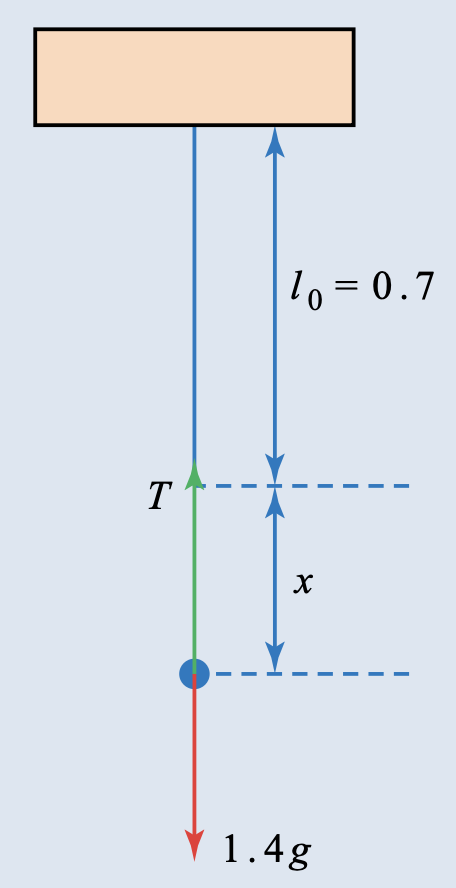
In equilibrium, \(T=1.4g\). Hooke’s law gives
\[ T=\frac{\lambda}{l_0}x \quad\Longrightarrow\quad 1.4g=\frac{50}{0.7}x. \]
Therefore
\[ \boxed{x=0.196\ \mathrm m}. \]Example 5.2 · Kitchen scales
The mechanism of a set of kitchen scales consists of a light scale pan supported on a spring of natural length \(20\) mm. When measuring \(1.5\) kg of flour, the spring is compressed by \(7.5\) mm. Find
(i) the modulus of elasticity of the spring;
(ii) the mass of the heaviest object that can be measured if it is impossible to compress the spring by more than \(16\) mm.
Show answer
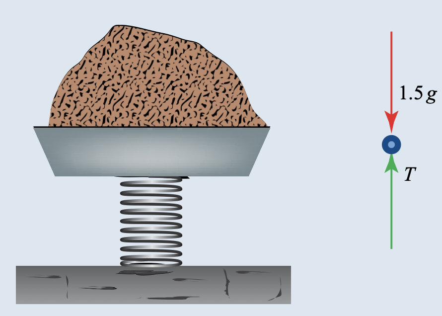
(i) The thrust equals the weight of the flour:
\[ 1.5g=\frac{\lambda}{0.02}(0.0075)=0.375\lambda. \]
Thus
\[ \boxed{\lambda=40\ \mathrm N}. \]
(ii) If the maximum mass is \(M\) kg,
\[ Mg=\frac{40}{0.02}(0.016)=32g. \]
Hence
\[ \boxed{M=3.2\ \mathrm{kg}}. \]Example 5.3 · Two parts of one elastic string
A particle of mass \(0.4\) kg is attached to the midpoint of a light elastic string of natural length \(1\) m and modulus of elasticity \(\lambda\) N. The string is stretched between a point \(A\) at the top of a doorway and a point \(B\) on the floor, \(2\) m vertically below \(A\).
(i) Find, in terms of \(\lambda\), the extensions of the two parts of the string.
(ii) Calculate their values when \(\lambda=10\).
(iii) Find the minimum value of \(\lambda\) that will ensure that the lower half of the string is not slack.
Show answer
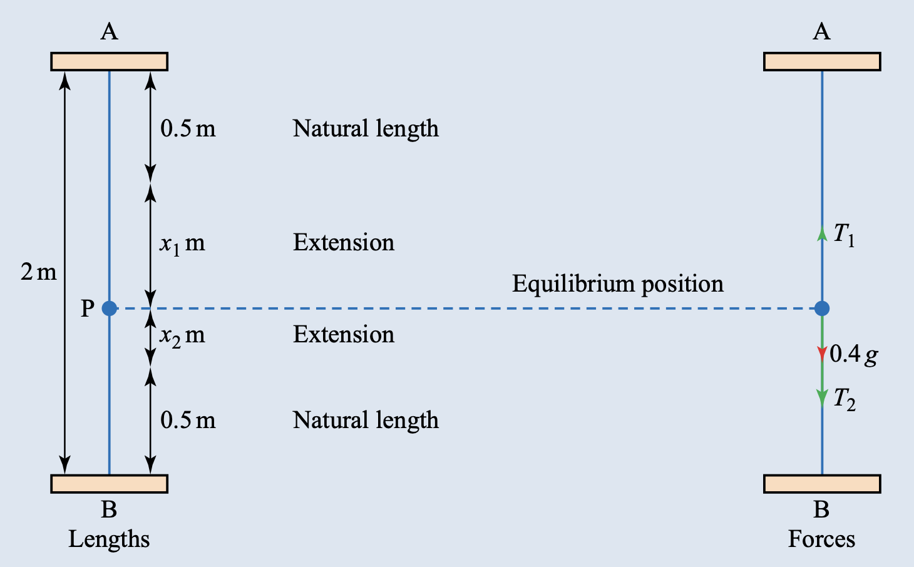
Let the extensions of \(AP\) and \(PB\) be \(x_1\) and \(x_2\).
Vertical equilibrium and Hooke’s law give
\[ T_1=T_2+0.4g, \qquad T_1=\frac{\lambda}{0.5}x_1, \qquad T_2=\frac{\lambda}{0.5}x_2. \]
Therefore
\[ \lambda(x_1-x_2)=0.2g. \]
The total extension is \(1\) m, so \(x_1+x_2=1\). Hence
\[ \boxed{x_1=0.5+\frac{0.1g}{\lambda}}, \qquad \boxed{x_2=0.5-\frac{0.1g}{\lambda}}. \]
(ii) When \(\lambda=10\) N, \(x_1=0.6\) m and \(x_2=0.4\) m.
(iii) For the lower part not to be slack, \(x_2\ge0\):
\[ 0.5-\frac{0.1g}{\lambda}\ge0 \quad\Longrightarrow\quad \boxed{\lambda\ge2\ \mathrm N}. \]Example 5.4 · Elastic potential energy
An elastic rope of natural length \(0.6\) m is extended to a length of \(0.8\) m. The modulus of elasticity is \(25\) N. Find
(i) the elastic potential energy in the rope;
(ii) the further energy required to stretch it to a length of \(1.65\) m.
Show answer
The elastic potential energy for extension \(x\) is
\[ E=\frac12\frac{\lambda}{l_0}x^2. \]
(i) For \(x=0.2\) m,
\[ E_1=\frac12\frac{25}{0.6}(0.2)^2 =\boxed{0.833\ \mathrm J}. \]
(ii) For final extension \(x=1.05\) m,
\[ E_2=\frac12\frac{25}{0.6}(1.05)^2=22.9\ \mathrm J. \]
The further energy required is
\[ \boxed{E_2-E_1=22.1\ \mathrm J}. \]Example 5.5 · A marble and a catapult
A marble of mass \(70\) g is placed at the centre of an elastic string and pulled back so that the string is just taut. The marble is then pulled back a further \(9\) cm and the force required to keep it in this position is \(60\) N. Find
(i) the stretched length of the string;
(ii) the tension in the string and its modulus of elasticity;
(iii) the elastic potential energy stored in the string and the speed of the marble when the string regains its natural length.
Show answer
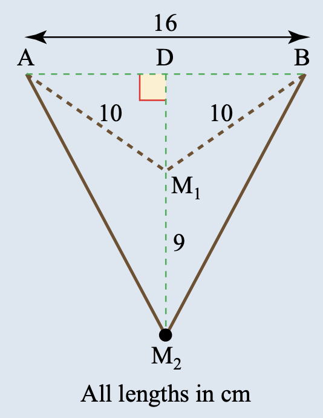
The half-distance between the prongs is \(8\) cm. Initially the perpendicular distance is
\[ DM_1=\sqrt{10^2-8^2}=6\ \mathrm{cm}. \]
After pulling back \(9\) cm, \(DM_2=15\) cm, so
\[ BM_2=\sqrt{15^2+8^2}=17\ \mathrm{cm}. \]
(i) The stretched length is
\[ \boxed{34\ \mathrm{cm}}. \]
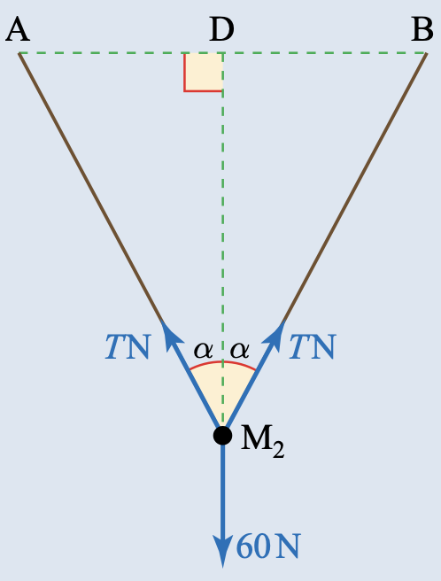
(ii) Resolving along the symmetry line,
\[ 2T\left(\frac{15}{17}\right)=60 \quad\Longrightarrow\quad T=34\ \mathrm N. \]
The extension is \(0.34-0.20=0.14\) m. Hence
\[ 34=\frac{\lambda}{0.20}(0.14) \quad\Longrightarrow\quad \boxed{\lambda=48.6\ \mathrm N}. \]
(iii)
\[ E=\frac12\frac{48.6}{0.20}(0.14)^2=2.38\ \mathrm J. \]
When the string returns to its natural length, this becomes kinetic energy:
\[ \frac12(0.07)v^2=2.38 \quad\Longrightarrow\quad \boxed{v=8.25\ \mathrm{m\ s^{-1}}}. \]Example 5.6 · A particle falling onto an elastic string
A particle of mass \(m\) is attached to one end, \(A\), of a light elastic string with natural length \(l_0\) and modulus of elasticity \(\lambda\). The other end is attached to a fixed point \(O\). The particle is released from \(O\). Initially it falls freely with the string slack; after reaching \(P\), the string becomes taut. At \(P\), the particle has velocity \(u\) downwards. Find the energy equation when the extension is \(x\) and the downward velocity is \(v\), and obtain the equation for \(x\) at the lowest point.
Show answer
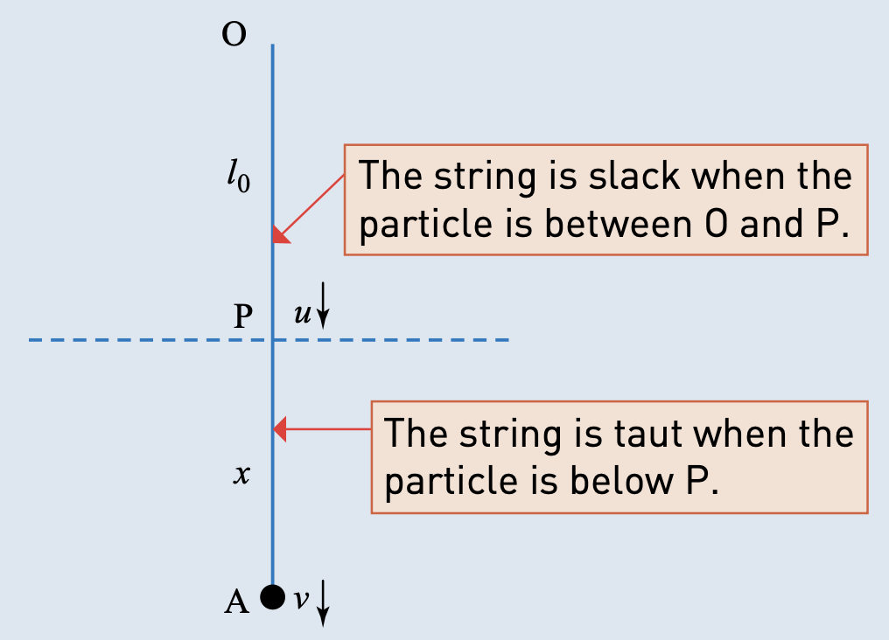
Before the string becomes taut, the particle falls through \(l_0\):
\[ \frac12mu^2=mgl_0 \quad\Longrightarrow\quad u=\sqrt{2gl_0}. \]
After a further distance \(x\), conservation of energy gives
\[ \boxed{\frac12mv^2-\frac12mu^2+\frac12\frac{\lambda}{l_0}x^2=mgx}. \]
At the lowest point \(v=0\), so
\[ \boxed{\frac12\frac{\lambda}{l_0}x^2-mgx-mgl_0=0}. \]Example 5.7 · Using calculus for vertical elastic motion
Use calculus to analyse the same particle and string model as Example 5.6.
(i) Write down the equation of motion when the string is taut, using \(v\,dv/dx\) for acceleration.
(ii) Solve this differential equation to find \(v\) in terms of \(x\) and interpret the solution.
(iii) Write the equation using \(dv/dt\) and comment on whether it is useful.
Show answer
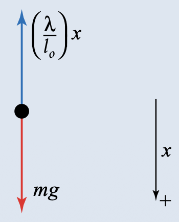
(i) Taking downward as positive,
\[ mg-\frac{\lambda}{l_0}x=ma, \qquad v\frac{dv}{dx}=g-\frac{\lambda}{ml_0}x. \]
(ii) Integrating,
\[ \frac12v^2=gx-\frac{\lambda}{2ml_0}x^2+C. \]
At \(x=0\), \(v=u\), so \(C=\frac12u^2\). Hence
\[ \boxed{v^2=u^2+2gx-\frac{\lambda}{ml_0}x^2}. \]
This is the energy equation in another form. The two algebraic signs of \(v\) represent downward and upward motion.
(iii) Using \(a=dv/dt\) gives
\[ \frac{dv}{dt}=g-\frac{\lambda}{ml_0}x. \]
This form contains \(v\), \(t\) and \(x\) and is therefore not useful by itself for solving the motion directly.3. 教材中标注 Cambridge International 的题目
本节收录 Further Mechanics Chapter 5 Exercise 5B 与 Exercise 5C 中明确标注 Cambridge International 来源的题目。题目保留英文，图像使用 Pic 文件夹中的独立图片，答案使用 Show answer。
A particle \(A\) and a block \(B\) are attached to opposite ends of a light elastic string of natural length \(2\) m and modulus of elasticity \(6\) N. \(B\) is at rest on a rough horizontal table. The string passes over a small smooth pulley \(P\) at the edge of the table, with the part \(BP\) of the string horizontal and of length \(1.2\) m. The frictional force acting on \(B\) is \(1.5\) N and the system is in equilibrium. Find the distance \(PA\).
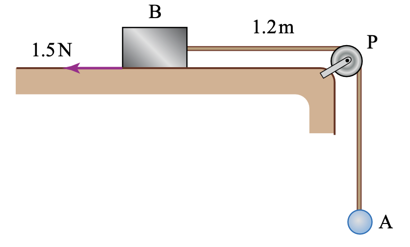
Show answer
Since \(B\) is in equilibrium, the tension is \(T=1.5\) N. Hooke’s law gives
\[ 1.5=\frac{6}{2}x \quad\Longrightarrow\quad x=0.5\ \mathrm m. \]
The total length of the string is therefore \(2+0.5=2.5\) m. Hence
\[ PA=2.5-1.2=\boxed{1.3\ \mathrm m}. \]A light elastic string has natural length \(0.6\) m and modulus of elasticity \(\lambda\) N. The ends of the string are attached to fixed points \(A\) and \(B\), which are at the same horizontal level and \(0.63\) m apart. A particle \(P\) of mass \(0.064\) kg is attached to the midpoint of the string and hangs in equilibrium at a point \(0.08\) m below \(AB\).
Find
(i) the tension in the string;
(ii) the value of \(\lambda\).
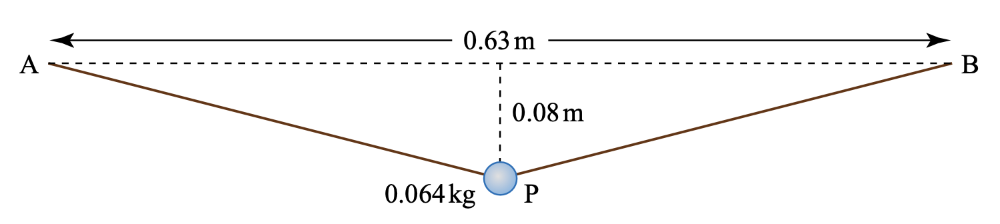
Show answer
Each half of the string has length
\[ \sqrt{0.315^2+0.08^2}=0.325\ \mathrm m. \]
Thus the total length is \(0.65\) m and the extension is \(0.05\) m.
(i) Resolving vertically,
\[ 2T\frac{0.08}{0.325}=0.064g \quad\Longrightarrow\quad \boxed{T=1.3\ \mathrm N}. \]
(ii) Hooke’s law gives
\[ 1.3=\frac{\lambda}{0.6}(0.05), \]
so
\[ \boxed{\lambda=15.6\ \mathrm N}. \]\(A\) and \(B\) are fixed points on a smooth horizontal table. The distance \(AB\) is \(2.5\) m. An elastic string of natural length \(0.6\) m and modulus of elasticity \(24\) N has one end attached at \(A\) and the other end attached to a particle \(P\) of mass \(0.95\) kg. Another elastic string of natural length \(0.9\) m and modulus of elasticity \(18\) N has one end attached at \(B\) and the other end attached to \(P\). The particle \(P\) is held at rest at the midpoint of \(AB\).
The particle is released from rest.
(i) Find the tensions in the strings.
(ii) Find the acceleration of \(P\) immediately after its release.
(iii) \(P\) reaches its maximum speed at the point \(C\). Find the distance \(AC\).
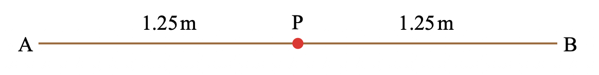
Show answer
Initially \(AP=BP=1.25\) m. Hence the extensions are \(0.65\) m and \(0.35\) m.
(i)
\[ T_A=\frac{24}{0.6}(0.65)=\boxed{26\ \mathrm N}, \qquad T_B=\frac{18}{0.9}(0.35)=\boxed{7\ \mathrm N}. \]
(ii) The resultant force is \(26-7=19\) N towards \(A\), so
\[ \boxed{a=\frac{19}{0.95}=20\ \mathrm{m\ s^{-2}}\text{ towards }A}. \]
(iii) At maximum speed the resultant force is zero. Let \(AC=x\); then \(BC=2.5-x\). Resolving along \(AB\):
\[ \frac{24}{0.6}(x-0.6)=\frac{18}{0.9}(2.5-x-0.9). \]
Solving gives
\[ \boxed{AC=0.933\ \mathrm m}. \]4. Paper 3 真题题库
本节收录 Paper 3 中涉及 elastic strings、springs、elastic energy、horizontal/vertical motion 和 slack-string conditions 的真题，答案按 Mark Scheme 分点展开。
Paper 3 questions
Questions are arranged by examination session and question number. The wording is kept in English, including every sub-question. Each solution is presented as a sequence of mark-scheme points.
2021 May/June · 9231/31 and 9231/32 · Question 3
One end of a light elastic string, of natural length \(a\) and modulus of elasticity \(kmg\), is attached to a fixed point \(A\). The other end of the string is attached to a particle \(P\) of mass \(4m\). The particle \(P\) hangs in equilibrium a distance \(x\) vertically below \(A\).
(a) Show that \(k=\dfrac{4a}{x-a}\).
An additional particle, of mass \(2m\), is now attached to \(P\) and the combined particle is released from rest at the original equilibrium position of \(P\). When the combined particle has descended a distance \(\frac13a\), its speed is \(\frac13\sqrt{ag}\).
(b) Find \(x\) in terms of \(a\).
Show answer
(a) The original particle is in equilibrium, so
\[ 4mg=\frac{kmg}{a}(x-a). \]
Therefore
\[ \boxed{k=\frac{4a}{x-a}}. \]
(b) After descending \(a/3\), the extension is \(x-2a/3\). Conservation of energy for the combined mass \(6m\) gives
\[ 2mga=\frac12\frac{kmg}{a}\left[\left(x-\frac23a\right)^2-(x-a)^2\right] +\frac12(6m)\left(\frac13\sqrt{ag}\right)^2. \]
Using part (a) and simplifying:
\[ \frac53a=\frac{2}{x-a}\left[\left(x-\frac23a\right)^2-(x-a)^2\right]. \]
Solving gives
\[ \boxed{x=\frac53a}. \]2021 October/November · 9231/31 · Question 1
One end of a light elastic string, of natural length \(a\) and modulus of elasticity \(3mg\), is attached to a fixed point \(O\) on a smooth horizontal plane. A particle \(P\) of mass \(m\) is attached to the other end of the string and moves in a horizontal circle with centre \(O\). The speed of \(P\) is \(\sqrt{\frac43ga}\). Find the extension of the string.
Show answer
Let the extension be \(x\). The tension supplies the centripetal force:
\[ \frac{3mg}{a}x=\frac{m(\sqrt{\frac43ga})^2}{a+x}. \]
Therefore
\[ 9x^2+9ax-4a^2=0, \]
and the physically valid root is
\[ \boxed{x=\frac13a}. \]2021 October/November · 9231/31 · Question 3
A light elastic string has natural length \(a\) and modulus of elasticity \(12mg\). One end is attached to a fixed point \(O\) and the other to a particle of mass \(m\). The particle hangs in equilibrium vertically below \(O\). It is pulled vertically down and released from rest with extension \(e\), where \(e>\frac13a\). In the subsequent motion the particle has speed \(\sqrt{2ga}\) when it has ascended a distance \(\frac13a\). Find \(e\) in terms of \(a\).
Show answer
Use conservation of energy between release and the stated position. The extension changes from \(e\) to \(e-\frac13a\), so
\[ \frac12m(2ga)+mg\left(-\frac13a\right) =\frac12\frac{12mg}{a}\left[e^2-\left(e-\frac13a\right)^2\right]. \]
Solving the resulting quadratic and retaining the root \(e>\frac13a\) gives
\[ \boxed{e=\frac12a}. \]2021 October/November · 9231/32 · Question 2
A light spring \(AB\) has natural length \(a\) and modulus of elasticity \(5mg\). End \(A\) is fixed on a smooth horizontal surface and a particle \(P\) of mass \(m\) is attached to end \(B\). Another particle \(Q\) of mass \(km\) moves towards \(P\) with speed \(4\sqrt{ga}\). The particles collide directly and coalesce. The greatest compression of the spring is \(\frac15a\). Find \(k\).
Show answer
Immediately after impact, conservation of momentum gives
\[ km(4\sqrt{ga})=(k+1)mV. \]
At maximum compression, the combined particle is instantaneously at rest. Applying conservation of energy from just after impact to maximum compression,
\[ \frac12(k+1)mV^2 =\frac12\frac{5mg}{a}\left(\frac15a\right)^2. \]
Substituting \(V=4k\sqrt{ga}/(k+1)\) and solving gives
\[ \boxed{k=\frac14}. \]2022 May/June · 9231/31, 9231/32 and 9231/33 · Question 2
A particle \(P\) of mass \(m\) is attached to one end of a light elastic string of natural length \(a\) and modulus of elasticity \(\frac43mg\). The other end is attached to a fixed point \(O\) on a rough horizontal surface. The particle is at rest with the string at its natural length and is projected along \(OP\) with speed \(\frac12\sqrt{ga}\).
Find the greatest extension of the string during the subsequent motion.
Show answer
If the greatest extension is \(x\), the initial kinetic energy is converted into elastic potential energy and work done against friction. Using the coefficient of friction \(\frac13\):
\[ \frac12m\left(\frac12\sqrt{ga}\right)^2 =\frac12\frac{(4/3)mg}{a}x^2+\frac13mgx. \]
Simplifying and taking the positive root gives
\[ \boxed{x=\frac14a}. \]2022 May/June · 9231/31 and 9231/32 · Question 4
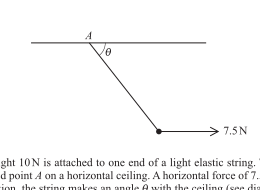
A particle of weight \(10\) N is attached to one end of a light elastic string. The other end of the string is attached to a fixed point \(A\) on a horizontal ceiling. A horizontal force of \(7.5\) N acts on the particle. In the equilibrium position, the string makes an angle \(\theta\) with the ceiling (see diagram). The string has natural length \(0.8\) m and modulus of elasticity \(50\) N.
(a) Find the tension in the string.
(b) Find the vertical distance between the particle and the ceiling.
Show answer
(a)
- Resolving horizontally and vertically gives \(T\cos\theta=7.5\) and \(T\sin\theta=10\).
- Hence \(T=\sqrt{7.5^2+10^2}=\boxed{12.5\text{ N}}\).
(b)
- Hooke’s law gives \(12.5=\dfrac{50}{0.8}e\), so \(e=0.2\) m.
- The stretched length is \(1.0\) m.
- Therefore the vertical distance is \(1.0\sin\theta=1.0\cdot\frac45=\boxed{0.8\text{ m}}\).
2022 October/November · 9231/31 and 9231/33 · Question 2
A light elastic string has natural length \(a\) and modulus of elasticity \(4mg\). One end is fixed at \(O\) on a smooth horizontal surface and the other is attached to a particle \(P\) of mass \(m\). The particle is projected along the surface in the direction \(OP\). When the length of the string is \(\frac54a\), the speed is \(v\); when the length is \(\frac32a\), the speed is \(\frac12v\).
(a) Find \(v\) in terms of \(a\) and \(g\).
Show answer
The change in elastic potential energy is
\[ \frac12\frac{4mg}{a}\left[\left(\frac12a\right)^2-\left(\frac14a\right)^2\right] =\frac38mga. \]
The change in kinetic energy is
\[ \frac12m\left(\frac14v^2-v^2\right)=-\frac38mv^2. \]
Equating the loss of kinetic energy to the gain in elastic energy gives
\[ \boxed{v=\sqrt{ga}}. \]2022 October/November · 9231/32 · Question 3
One end of a light elastic string, of natural length \(a\) and modulus of elasticity \(\frac{16}{3}Mg\), is attached to a fixed point \(O\). A particle \(P\) of mass \(4M\) is attached to the other end of the string and hangs vertically in equilibrium. Another particle of mass \(2M\) is attached to \(P\) and the combined particle is then released from rest. The speed of the combined particle when it has descended a distance \(\frac14a\) is \(v\).
Find an expression for \(v\) in terms of \(g\) and \(a\).
Show answer
- In the original equilibrium, \(4Mg=\frac{(16/3)Mg}{a}e\), so \(e=\frac34a\).
- After descending \(\frac14a\), the extension is \(a\).
- Loss in gravitational potential energy is \(\frac32Mga\).
- Gain in elastic potential energy is \(\frac76Mga\).
- Thus \(\frac32Mga-\frac76Mga=\frac12(6M)v^2\).
- Therefore \(\boxed{v=\frac13\sqrt{ga}}\).
2023 May/June · 9231/31 and 9231/32 · Question 1
One end of a light elastic string, of natural length \(a\) and modulus of elasticity \(3mg\), is attached to a fixed point \(O\). The other end is attached to a particle \(P\) of mass \(m\). The string hangs with \(P\) vertically below \(O\). The particle is pulled vertically downwards so that the extension is \(2a\) and is released from rest.
(a) Find the speed when the particle is \(\frac34a\) below \(O\).
(b) Find the initial acceleration when it is released.
Show answer
At release the extension is \(2a\); at the stated position the extension is \(-\frac14a\) relative to the natural-length reference. Applying the energy equation with the correct gravitational-height change gives
\[ \boxed{v=\sqrt{\frac{15}{2}ga}}. \]
At release,
\[ T=\frac{3mg}{a}(2a)=6mg, \]
so the resultant downward force is \(5mg\) and
\[ \boxed{a_0=5g\text{ downwards}}. \]2023 May/June · 9231/31 and 9231/32 · Question 5
A light elastic string of natural length \(a\) and modulus of elasticity \(\mu mg\) has one end attached to a fixed point \(O\) on a smooth horizontal surface. With a particle of mass \(m\) attached, it moves with speed \(v\) in a horizontal circle of radius \(x\). With a particle of mass \(2m\) attached, it moves with speed \(\frac12v\) in a horizontal circle of radius \(\frac34x\).
(a) Find \(x\) in terms of \(a\).
Show answer
For each case, tension equals the centripetal force and Hooke’s law gives
\[ \frac{\mu mg}{a}(x-a)=\frac{mv^2}{x}, \]
\[ \frac{\mu mg}{a}\left(\frac34x-a\right)=2m\frac{(v/2)^2}{3x/4}. \]
Eliminating \(v\) and \(\mu\) gives
\[ \boxed{x=4a}. \]2023 May/June · 9231/33 · Question 2
One end of a light elastic string, of natural length \(a\) and modulus of elasticity \(\lambda mg\), is attached to a fixed point \(O\). The string lies on a smooth horizontal surface. A particle \(P\) of mass \(m\) is attached to the other end of the string. The particle \(P\) is projected in the direction \(OP\). When the length of the string is \(\frac43a\), the speed of \(P\) is \(\sqrt{2ag}\). When the length of the string is \(\frac53a\), the speed of \(P\) is \(\frac12\sqrt{2ag}\).
Find the value of \(\lambda\).
Show answer
- The extensions are \(\frac13a\) and \(\frac23a\).
- The loss in kinetic energy is \(\frac12m\left[(\sqrt{2ag})^2-\left(\frac12\sqrt{2ag}\right)^2\right]\).
- The gain in elastic potential energy is \(\frac12\frac{\lambda mg}{a}\left[\left(\frac23a\right)^2-\left(\frac13a\right)^2\right]\).
- Equating the two gives \(\boxed{\lambda=\frac92}\).
2023 May/June · 9231/33 · Question 5
One end of a light elastic string, of natural length \(12a\) and modulus of elasticity \(kmg\), is attached to a fixed point \(O\). The other end of the string is attached to a particle of mass \(m\). The particle moves with constant speed \(\frac32\sqrt{3ag}\) in a horizontal circle with centre at a distance \(12a\) below \(O\). The string is inclined at an angle \(\theta\) to the downward vertical through \(O\).
(a) Find, in terms of \(a\), the extension of the string.
(b) Find the value of \(k\).
Show answer
(a)
- Let \(L\) be the stretched length and \(r=12a\tan\theta\).
- Resolving vertically gives \(T\cos\theta=mg\).
- Resolving towards the centre gives \(T\sin\theta=\frac{mv^2}{r}=\frac{27}{4}\frac{mag}{r}\).
- Dividing and using \(r=12a\tan\theta\) gives \(\tan\theta=\frac34\).
- Hence \(L=\dfrac{12a}{\cos\theta}=15a\), so the extension is \(\boxed{3a}\).
(b)
- Hooke’s law gives \(T=\frac{kmg}{12a}(3a)=\frac14kmg\).
- Since \(\cos\theta=\frac45\), vertical equilibrium gives \(T=\frac54mg\).
- Hence \(\boxed{k=5}\).
2024 October/November · 9231/31 and 9231/33 · Question 3
A particle \(P\) of mass \(m\) kg is attached to one end of a light elastic string of natural length \(2\) m and modulus of elasticity \(2mg\) N. The other end of the string is attached to a fixed point \(O\). The particle \(P\) hangs in equilibrium vertically below \(O\). The particle \(P\) is pulled down vertically a distance \(d\) m below its equilibrium position and released from rest.
(a) Given that the particle just reaches \(O\) in the subsequent motion, find the value of \(d\).
Show answer
- In equilibrium, \(mg=\frac{2mg}{2}e\), so the equilibrium extension is \(e=1\) m.
- The extension at release is \(1+d\).
- At \(O\) the string is at natural length and the particle is instantaneously at rest, so \(\frac12mg(1+d)^2=mg(3+d)\).
- Hence \(d^2=5\) and \(\boxed{d=\sqrt5\text{ m}}\).
2025 October/November · 9231/31 and 9231/33 · Question 4
One end of a light elastic string of natural length \(a\) and modulus of elasticity \(5mg\) is attached to a fixed point \(O\). Two particles, \(P\) and \(Q\), of masses \(m\) and \(4m\) respectively, are attached to the other end of the string and they hang vertically in equilibrium. Particle \(Q\) is then detached from the string, hence releasing particle \(P\) from rest.
Find, in terms of \(a\), the length of the string when the speed of particle \(P\) is first equal to \(\sqrt{\frac75ag}\).
Show answer
- Before detachment, equilibrium gives \(\frac{5mg}{a}e=5mg\), so \(e=a\).
- Let \(x\) be the length of the string when the speed is \(\sqrt{\frac75ag}\); its extension is \(x-a\).
- Conservation of energy gives \(\frac{5mga^2}{2a}-\frac{5mg(x-a)^2}{2a}=mg(e+a-x)+\frac12m\left(\sqrt{\frac75ag}\right)^2\).
- Simplifying gives \(25x^2-60ax+27a^2=0\).
- The physical root is \(\boxed{x=\frac95a}\).
5. 本章检查清单
- extension 必须是 actual length 减 natural length；
- compression 也使用 decrease in length；
- modulus of elasticity 的单位是 N；
- 每段 string 要用自己的 natural length；
- elastic energy 使用 \(\frac12\lambda x^2/l_0\)；
- slack string 不能提供负 tension；
- vertical motion 要同时检查 GPE、EPE 和 KE；
- 发现 \(T<0\) 时必须重新判断运动模型。